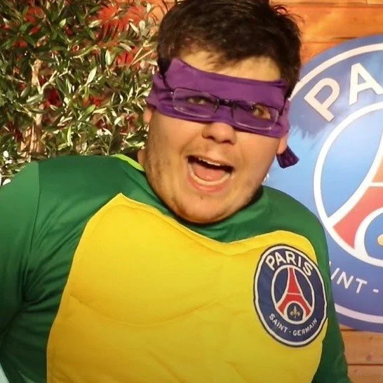

O comunicador se tornou o streamer com mais inscritos no mundo na Twitch. Cazé conseguiu o feito por conta da transmissão de jogos do Campeonato Brasileiro, que impulsionaram a chegada de novos 'subs' ao influenciador.
Novidades sobre a LENDA
Internet se mobiliza após conta de Casimiro na Twitch ser suspensa. Streamer transmitiu imagens de uma partida de futebol sem possuir os direitos de transmissão, mas conseguiu reverter a decisão
Além de trazer para o seu público as transmissões de campeonatos, como foi com o Carioca em 2022, e agora os jogos do Athletico Paranaense no Brasileirão, Caze se une a Tiago Leifert para comentar as partidas da Copa do Brasil, pela Amazon Prime Video.
